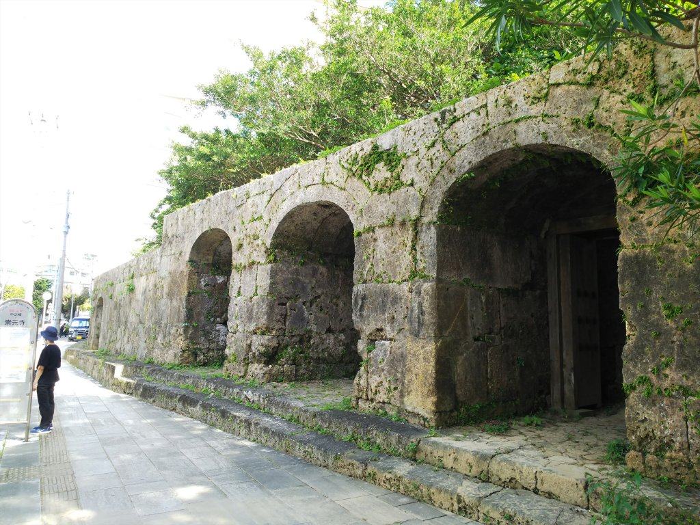
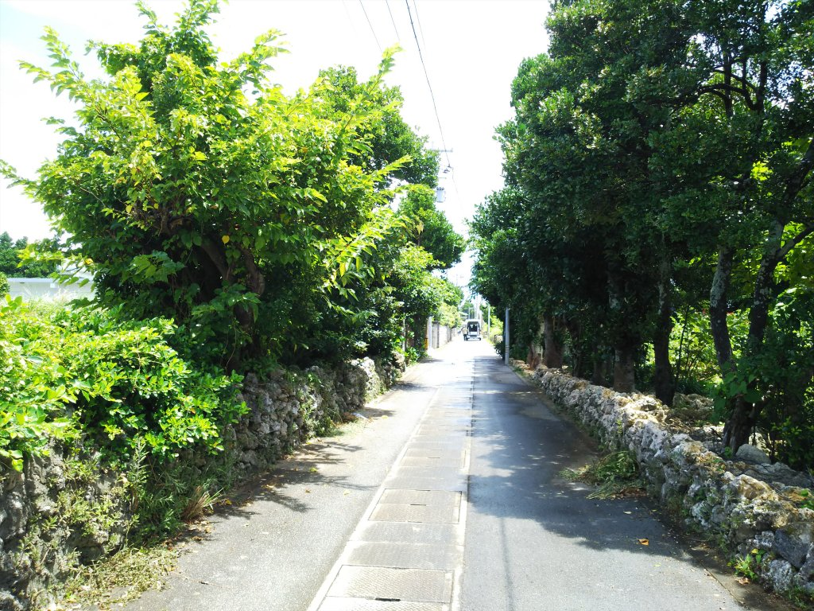
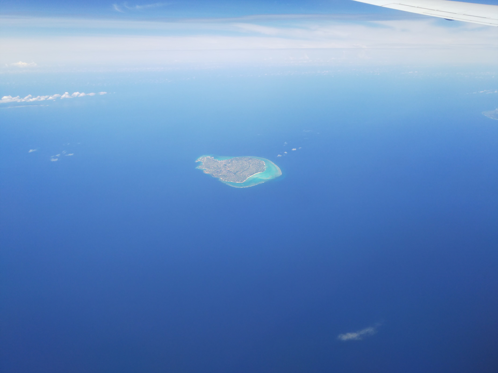
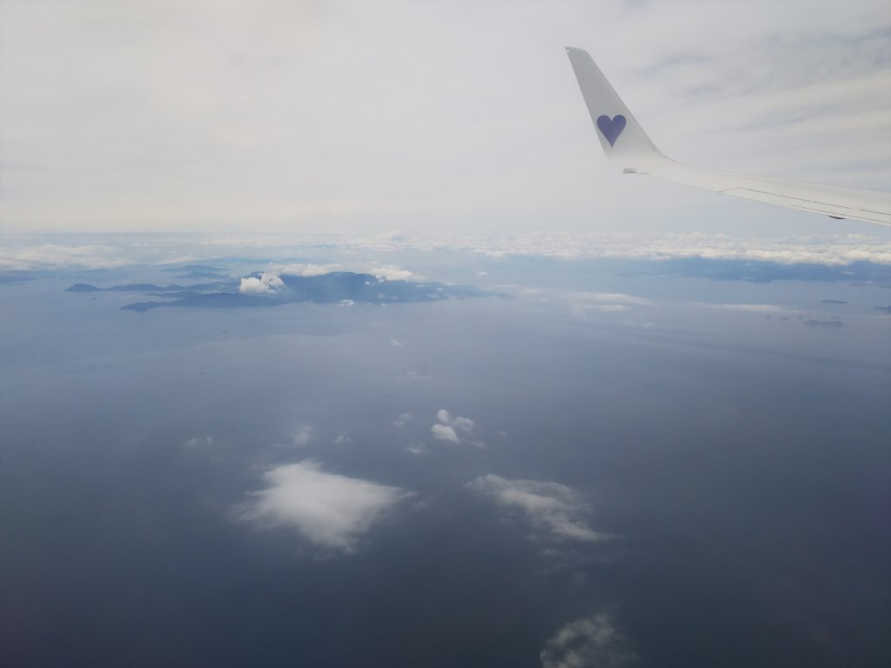

今年の夏は引っ越しで大忙しなので、早めの夏旅に行ってきました！
やって来たのは神戸空港。このド派手な飛行機が今
日のお伴です。
離陸早々、住むことになる街が眼下に広がります。
ピカチュウとコラボなのでド派手やったのね。
スカイマークは安いけどＬＣＣと違ってドリンクサ
－ビスあるから良いです。
ん～夏！那覇空港に到着です。
約２０年ぶりの沖縄です。
これこれ、前来た時はなかったもんね。
日本最南端の駅、かな。
ひゃ～！すでにＱＲコード乗車券になってる！
２両しかないので混んでます。かぶりつき座席があ
って、途中からは座れました。
いきなり、終点まで乗りとおします。
ＱＲコード乗車券で疑問やったのは、出るときどな
いすんねん、でしたけど、
なんとベタな方法！昔の国鉄の無人駅と同じやがな！
終点のてこだ浦西駅ですが、周りは何もない所でし
た。
途中、右も左も沖縄特有の墓に囲まれる区間があって、なかなかシュールでした。
ホテルにチェックインする前に、安里エリアを散策してみます。
いきなりありますねぇ。私は絶対無理っす。
久々に那覇に来て、車窓から見る街は昔ながらの建
物が減ったなぁという感じでしたが、歩いてみると
残ってるところには残ってます。
この安里地区、なかなか怪しい雰囲気を醸し出して
ました。
ホテルから国際通りに行く途中。南国らしい花の咲
く道。
国際通りは相変わらず賑わってました。

翌日。やっぱ暑いっす。 ホテル近くの崇元寺の門です。那覇ってこういう小さな公園っぽいところにも熱帯っぽい木が茂ってて
いいっすね。
今日の、というか今回のメインイベントです。
泊港まで歩いてやってきました。
このフェリーに乗り込みます。

行先は粟国島。
フェリーは新しいっすね。いざ出航！
にっぽん丸が停泊してますね。ちょっと小さいのが
玉にきずですが、キレイなフォルムです。
外国の巨大なクルーズ船も停まってます。どーりで
国際通りにインバウンドの人がよーざんおったわ。
２時間ぐらいで粟国島が見えてきました。
このあと、いきなり雨が降ってきました。
自転車で島巡りと思ってたのにどないすんねん！と
思ってたらすぐやみました。良かった良かった。
手前の軽トラには牛が積まれてました。
船降りたらレンタサイクルすぐ見つかると思ったら
全然店がなく、近くの商店の人に聞いてようやく観
光協会で借りれることが判明しました。
帰りの便まで２時間しかない！
まずは島唯一のビーチへ。 ブランコがあって、おっさんひとり、ひさびさに漕ぎました。
海は風があったせいか、与論のほうが綺麗に見えたかな。 さすがに今回は泳いでまへん。

結構、木の多い島、っていう感想です。
水が貴重な島だったようで、昔使ってた雨水をためる「トゥージ」です。
港に戻ってきました。昔はこんな小舟で往来してた
んやね。怖ないんかいな。
さて、無事に本島に戻り、少し休憩したあと、新居
で使える食器はないかと壺屋ヤチムン通りにやって
きました。
唯一残ってる登り窯。
昔の陶工の家。
いまふうの店もたくさんありましたが、結局気に入
ったものはなかったっす。
国際通りまでぶらぶらします。なかなか怪しげな通
りもありますね。
西成みたいにホームレスが寝転がってるエリアもあ
りました。
（背中側なんで写ってませんが。さすがによー撮れ
まへん。）

翌朝、安さ重視で朝便で戻りました。工事でモノレ
ールが運休で、朝いちで行こうと思ってた首里に行
けず残念！
飛行機からは島々がよく見えました。
これは与論島
沖永良部島
まだ行けてない徳之島。このあと奄美も見えました
が雲がかなりかかってて綺麗には見えず。

本州に戻ってくると空と海の色が違う・・・
小豆島
家島諸島
神戸空港に降り立ったら、かなり涼しく感じました。